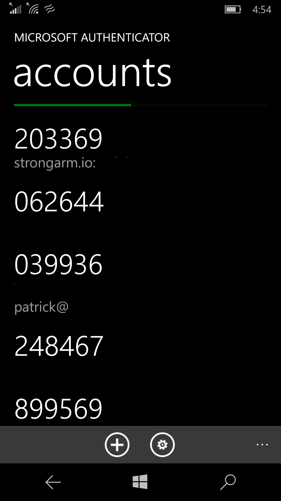
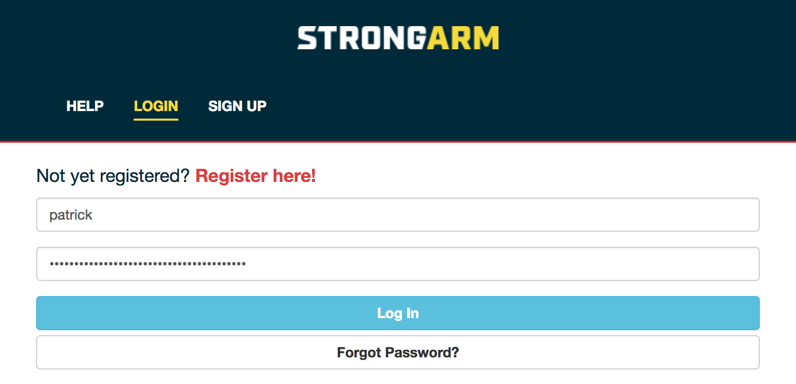
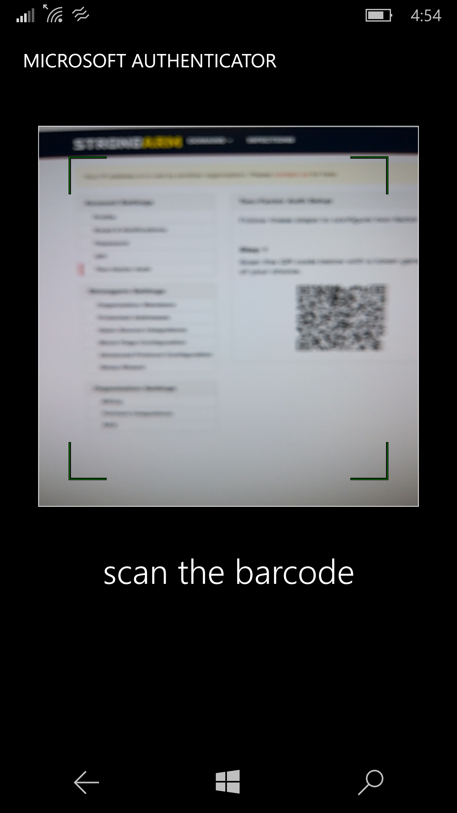
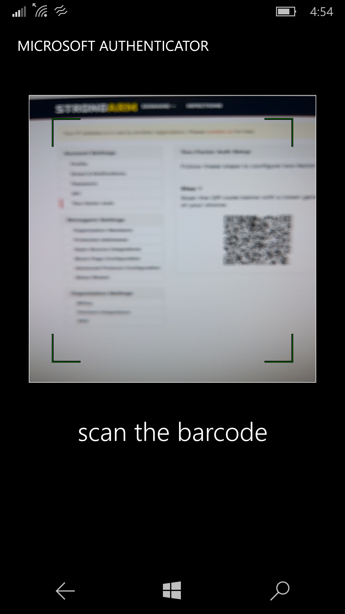

Django Boston
October 27, 2016
Patrick Cloke
django-allauth)Django Boston
October 27, 2016
Patrick Cloke

Patrick Cloke

Requires two pieces of evidence:
| [1] | Multi-factor authentication on Wikipedia |
| [2] | SecureID token new.JPG on Wikimedia Commons, released into Public Domain |
Generally the second factor is a user's phone via one of two mechanisms:
Warning
| [3] | Time-based One-time Password Algorithm on Wikipedia |
django-allauth [4]A reusable Django [5] package to work with authentication, registration, account management, and social authentication. [6]
Supports both local (i.e. django.contrib.auth) and "social" accounts (e.g.
OpenID, OAuth, OAuth2 providers)
- Many social providers come pre-packaged (e.g. GitHub, Amazon, Twitter)
Customizable (e.g. you can add custom providers, customize the "adapter")
Supports multiple providers in the same Django application
Supports multiple options for account verification (e.g. email)
| [4] | django-allauth on GitHub |
| [5] | We really love Django! Check out Why Django? for some reasons why. |
| [6] | Welcome to django-allauth: Rationale |
django-allauth-2fa [7]A reusable package that adds two-factor authentication to django-allauth. It
provides the glue between django-otp [8] and django-allauth.
master.| [7] | django-allauth-2fa on GitHub |
| [8] | django-otp on BitBucket |
A user enters their username & password, like normal.
 

Once a user has two-factor enabled, they can:
Install the package via pip [9].
pip install django-allauth-2fa
| [9] | Ideally you're using a virtualenv! But virtualenv could be an
entire separate lightning talk. |
django-allauth-2fa to the list of installed apps in settings.py.django-allauth, django-otp, and their dependencies.)1 2 3 4 5 6 7 8 9 10 11 12 | INSTALLED_APPS = (
'django.contrib.sites', # Required by allauth.
'django.contrib.auth', # Configure Django auth package.
'django.contrib.contenttypes',
'django.contrib.sessions',
'allauth', # Enable allauth.
'allauth.account',
'django_otp', # Configure the django-otp package.
'django_otp.plugins.otp_totp',
'django_otp.plugins.otp_static',
'allauth_2fa', # Enable two-factor auth.
)
|
Enable the django-allauth-2fa middleware in settings.py. [10]
1 2 3 4 5 6 7 8 9 10 11 12 13 | MIDDLEWARE_CLASSES = (
# Configure Django auth package.
'django.contrib.auth.middleware.AuthenticationMiddleware',
# Configure the django-otp package. Note this must be after the
# AuthenticationMiddleware.
'django_otp.middleware.OTPMiddleware',
# Reset login flow middleware. If this middleware is included, the login
# flow is reset if another page is loaded between login and successfully
# entering two-factor credentials.
'allauth_2fa.middleware.AllauthTwoFactorMiddleware',
)
|
| [10] | django-allauth-2fa also supports the MIDDLEWARE setting from
Django>=1.10 as of two days ago. |
Configure django-allauth to use the django-allauth-2fa adapter in
settings.py. (This enables the two-factor authentication login workflow.)
1 2 3 4 5 6 | # Set the allauth adapter to be the 2FA adapter.
ACCOUNT_ADAPTER = 'allauth_2fa.adapter.OTPAdapter'
# Configure your default site. See
# https://docs.djangoproject.com/en/dev/ref/settings/#sites.
SITE_ID = 1
|
Include the django-allauth-2fa URLs/views.
1 2 3 4 5 6 7 | from django.conf.urls import include, url
urlpatterns = [
# Include the allauth and 2FA urls from their respective packages.
url(r'^accounts/', include('allauth_2fa.urls')),
url(r'^accounts/', include('allauth.urls')),
]
|
django-allauth-2fa.django-allauth-2fa doesn't include models or migrations, but
django-allauth and django-otp do.1 | python manage.py migrate
|
Please reach out if you have any questions!
Patrick Cloke
Additionally, we're hiring!
Slides available at https://github.com/percipient/talks/
{kind=link}